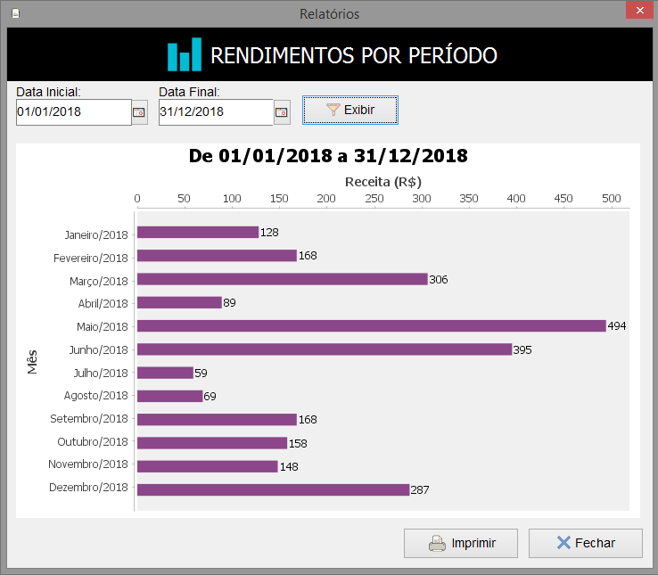

Guia de Estilo
Início
Desktop
(current)
Web
Sobre
Diretrizes Gerais
Layout
Fonte (Letras)
Componentes
Janelas
Formulários
Caixas de Diálogo
Caixas de Mensagem
Modelos de Interface
Login
Tela Principal
CRUD
Pesquisa
Mestre-Detalhe
Pagamento
Relatório
• Gráfico
Diretrizes de Gráfico
No fim desta página
, há orientações referentes ao
Gráfico
:

Gráfico de redimentos por período, um exemplo de uma ferramenta comumente utilizada para mostrar valores e índices.
O
Gráfico
tem a função de mostrar dados que precisam ser quantificados a fim de transmitir uma informação. Após a definição dos filtros pelo usuário, este pode consultar desempenhos, receitas, despesas, entre outros índices importantes no uso de um software. Neste projeto exemplo, utilizamos filtros de data, em que pelo menos um deles precisa ser preenchido.
Utilizadas neste exemplo (válidas para DESKTOP e WEB):
Habilite o botão
Exibir
apenas quando a condição do filtro for atendida, no exemplo, pelo menos uma das datas;
Semelhantemente, habilite o botão
Imprimir
apenas quando o gráfico for exibido;
Optamos pelo período selecionado como título do gráfico, uma vez que o título da funcionalidade
Rendimentos Por Período
já está bem claro no topo;
Mostre todos os filtros utilizados em alguma área próxima ao gráfico, para que o usuário saiba como os dados foram filtrados;
Coloque as legendas verticais e horizontais, no exemplo,
Mês
e
Receita (R$)
, nos respectivos locais;
Nos casos de o gráfico tratar de tempo, é importante mostrar as informações completas, com mês e ano;
Inclua um botão para retornar à tela anterior, neste projeto exemplo, ele se chama
Fechar
.